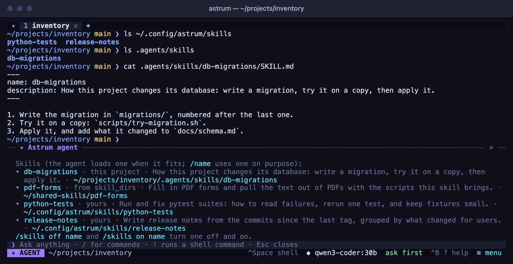
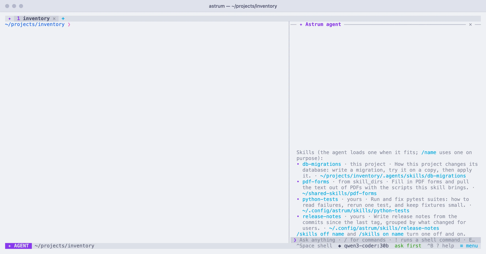

Rules and skills
Give the agent standing instructions in AGENTS.md files, and skills it loads for particular kinds of work.
Rules files
Standing instructions for the agent go in plain Markdown files named AGENTS.md:
~/.config/astrum/AGENTS.mdholds your own rules, for every project: how you like things done, tools you prefer, things never to touch.- An
AGENTS.mdin a project holds that project's rules: how to build and test it, its conventions. Astrum reads the one in the shell's current directory and those in the directories above it, up to the top of the repository (the directory holding.git) or your home directory, whichever comes first. Outside your home directory, with no repository, only the one in the current directory is read: a directory such as/tmpis anyone's. One that is a link to a file outside the project (outside the repository, or outside its own directory where there is none) is not read, so a project cannot put a file of yours, such as~/.netrc, before the model.
A rules file is whatever you would tell someone new to the work. For example:
# Working on this project
- Build with `make` and test with `make test`; run the tests before saying a change is done.
- Never change anything under `vendor/`.
- Write commit messages in the present tense.Short, specific rules work best.
How rules are read
The files are read at the start of every turn, so an edit applies from your next message. The agent panel says which files it is following ("Following the rules in ~/.config/astrum/AGENTS.md and AGENTS.md."), and says it again when that changes.
They are given to the agent in order: your own file first, then the project's, from the one furthest up down to the one in the current directory. When rules disagree, the file closest to the current directory wins, and what you ask for in the conversation wins over all of them.
- Each file is limited to 32 KB. What is beyond that is left out, and the agent is told so.
- An empty file is passed over.
- Up to six of a project's files are read, the closest ones.
- Rules are not part of the conversation: compacting a long conversation leaves them as they are.
- In a tab on another machine, an
AGENTS.mdin the project there is read along with your own from this machine (see Other machines).
The instructions setting
A line or two for the agent can also go in the config file, under [agent]:
[agent]
instructions = "Prefer ripgrep over grep."It is added to what the agent is told in every tab and every project, ahead of the rules files, and applies from the next message once the file is saved. Anything longer is easier to keep in ~/.config/astrum/AGENTS.md.
What a skill is
A skill is instructions for a particular kind of work, kept in a folder of its own with whatever it needs: scripts, templates, reference files. It is the layout other agents use, so a skill written for one of them works here as it is.
release-notes/
SKILL.md
scripts/changes.shThe agent is shown only each skill's name and description, so having many skills costs little. When one fits what you ask, it loads the rest and follows it.
Writing a skill
SKILL.md begins with a short front matter, then the instructions:
---
name: release-notes
description: Write release notes for recent commits. Use when asked for release notes.
---
1. Run `scripts/changes.sh N` from this skill's folder ...nameis what the agent and the slash menu know the skill by: letters, digits,-,_and., up to 64 of them, not starting with-or.. Without one, or with one that cannot be used, the folder's name is used.descriptionsays what the skill is for and when it is of use. It is all the agent sees of the skill until it loads it, so say when to use it. Without one, the first line of the instructions stands in. Up to 1,024 characters are used.- Other keys in the front matter, such as
licenseandmetadata, are passed over. - The instructions are read up to 64 KB.
SKILL.mdmust be a file in the skill's folder: one that is a link to a file outside it is passed over (the whole folder can be a link). - The other files in the folder (down to four levels, up to 200 of them, hidden ones left out) are listed for the agent when it loads the skill. It can read any of them, up to 256 KB each, and nothing outside the folder.
Where skills are found
Each of these is a folder of skill folders:
~/.config/astrum/skills/: yours, for every project.Folders you list as
skill_dirsunder[agent]:[agent] skill_dirs = ["~/shared-skills"] # a relative path starts from your home folder- A project's
.agents/skills/or.astrum/skills/, in the shell's current directory and the directories above it, as far up as forAGENTS.md: to the top of the repository or your home directory, whichever comes first (outside your home directory, with no repository, the current directory's only).
Where two skills have the same name, the later in that list wins: a project's over one from skill_dirs, and that over your own; among a project's folders, the closest. Skills are looked for afresh at the start of every turn, so a skill you add is there from your next message. Up to 100 are offered from each of the three, so a project with a great many does not leave out your own.
How the agent uses skills
When a skill fits what you ask, the agent loads it before it starts (the panel shows Read the skill release-notes) and follows it. It can read the skill's other files the same way. Loading a skill is never asked about: it only reads. A script a skill brings is run as any command is, in your shell, after the usual question, so a skill does not change what needs your approval.
Using a skill on purpose
To use one on purpose, type its name as a command in the panel, with what you want after it:
/release-notes for 0.6.0The slash menu offers the skills as you type, after Astrum's own commands, each with skill:, where it is from (yours, from skill_dirs, or this project) and its description. With nothing after the name, the agent does what the skill is for, here. A skill that has the name of one of Astrum's own commands (/model, /help and the like) can still be loaded by the agent, but not chosen this way.
Turning skills off and on
/skills lists the skills there are: each one's name, where it is from (yours, from skill_dirs, or this project), whether it is off, what it is for and its folder.


To turn one off, choose ≡ menu → Settings → Skills (the row says how many there are, and how many are off), then choose the skill; choosing it again turns it back on. In the panel, /skills off name and /skills on name do the same. A skill that is off is not shown to the agent, and /name says it is off. The choice is remembered, for every session.
Skills on another machine
In a tab on another machine, or with the agent taken into an ssh, the agent is offered your own skills, which stay on your machine. A project's skills are read only when the project is on this machine.
A script one of your skills brings is put on the other machine by Astrum when the agent asks for it, in ~/.cache/astrum/skills/ there, as it is; one larger than 256 KB is not put there. In an ssh with nothing of Astrum's on the other side, the agent reads the script and writes it there itself, with a command you approve. See Other machines.